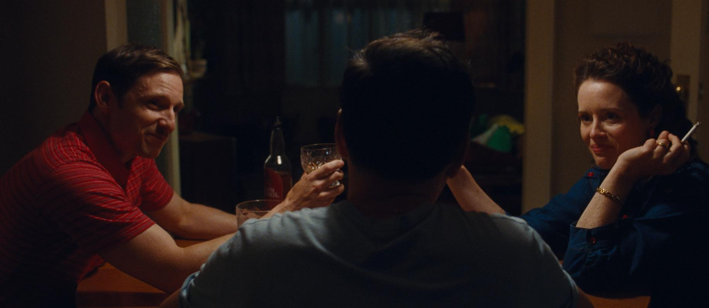

The following contains spoilers for All of Us Strangers (2023), including the ending.
When I hobbled out of the AMC in San Francisco some odd days ago, in a god-forsaken block on Fillmore, I was physically ill in a way that I had never felt before. There was nothing particularly grotesque or nauseating about All of Us Strangers (2023), director David Haigh’s new drama-romance-fantasy starring Andrew Scott and Paul Mescal; but, standing outside in the pouring rain, waiting for the 38R to take me home, I could barely breathe. Flashbacks to any moment made me retch. Whatever was happening to me, I knew one thing for sure. My life can now be divided into two eras: before watching this film, and after.
Scott and Mescal play out a distinctly soft-hearted and intimate romance, as two lonely neighbors, the only residents in a giant multi-story complex, finding a home in each other’s company. There’s a lot that queer male audiences will find enjoyable about this film: in brief moments, it acknowledges the differences between younger and older generations, and the grey areas of being accepted by the family that other films, with extremist plots of either wholesale acceptance or rejection, fail to explore. The sex scenes are patient, tactile, slow to build — hardly the aggressive falling-to-the-floor pump-and-dumps to which we’ve become all too accustomed.
“There’s so much touching, whether that’s familial touching or a more sensual thing,” Scott told the New York Times in a joint interview with Mescal. “People have talked an awful lot about the chemistry and the sex between our characters, but actually what I think is really radical and affecting about the relationship is how affectionate and tender they are with each other. It’s such a beautiful thing to play, isn’t it? Just real care.”
Knowing their past work, this sort of dynamic only makes sense: Scott and Mescal have played heterosexual love interests (Fleabag and Normal People, respectively), each adored and drooled over in their own right; and as the Times’ Kyle Buchanan writes, “instead of aiming those love beams at women,” they aim them “at each other” in this film. One may imagine All of Us Strangers a victory, if short-lived, for the girls and gays.
But victory was never the point — any breadth of knowledge of Haigh’s work would quickly such an assumption. Even in this film, Haigh’s central premise is to answer the unanswerable: What if we could tell our deceased loved ones all the things we couldn’t? What if we were given that one last chance, that in this cruel reality we can only dream of? Scott’s character, a writer named Adam looking to write a new screenplay, gets that rare opportunity; his childhood home opens as a portal that resurrects his parents, who had died in a car crash thirty years before.
Photo courtesy of SEARCHLIGHT PICTURES
There are the obvious exchanges: coming out to his parents (“As in homosexual?” Adam’s mother, played by Claire Foy, replies), chatting over dinner, reminiscing over childhood memories. In one scene, Adam finds himself unable to sleep and crawls into his parents’ bed, his middle-aged body in Christmas-patterned jammies, snuggling in as if he’s still a baby.
Then there are the more painful moments. Foy’s character, her opinions decades old, warns Adam the life of a homosexual “is a lonely life.” Adam almost instinctively rebukes her — “They don’t say that anymore” — but there’s a certain melancholic look in his eyes that certainly all queer people must recognize. Society may have come around to our existence, but that has never changed the fact that many of us feel as if we’re strangers in our own families, in our own close circles. Queerness is still a glass wall.
And that loneliness can be the death of us — in this film, quite literally, as the last fifteen minutes reveal that Mescal’s character, Harry, had been dead in his apartment all along, killed presumably by an overdose after Adam had rejected his initial flirtations the first night. As they curl up together in bed one last time, and Harry’s ghost fades away, the camera zooms out and the pair vanishes into a vast constellation of stars — a reminder, perhaps, that though the world may convince us otherwise, we are never truly alone.
Was it a happy ending? It’s a futile question in its very premise. Death is inevitable, and the chasms it leaves behind can never truly be repaired. But Adam is allowed what most men will never have: a final dinner with his parents to affirm their love their one another, before they also fade into the great nothing; and a chance to break the glass wall and be with the person he loves, even if it means dying alongside him. (At least that’s what I’m telling myself of this ending, if only for my own sanity.)
And we, the audience, having been gutted and drained by what amounts to a dual betrayal, shall we smile knowing we may yet have the chance to break our own glass walls? That though resurrection may be out of the question, our future holds just as profound a wealth of opportunities? Who knows. But we must live; so we must, we must, we must. ■